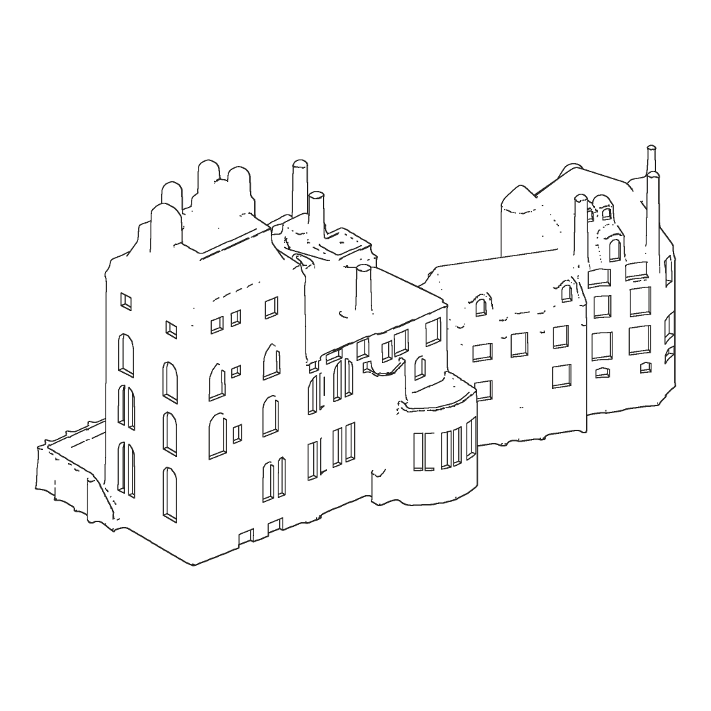
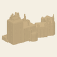
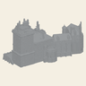
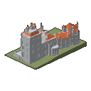
Fonthill was poured by hand in Doylestown, 1908–1912. This sculpture is printed one layer at a time in Bucks County. Both began with a model.
Mercer planned the house “room by room, entirely from the interior.” Blocks of clay standing for rooms were piled on a table and modelled into an outline. A plaster-of-Paris model, made to scale, served until the building was complete.1
Concrete for Fonthill was mixed by hand. Its construction combined practical experimentation with Mercer’s choices of material and form.1
Unplaned boards, many from demolished buildings, were stacked edge to edge and wired against bulging. Concrete went in pour by pour as the walls rose. Mercer left the grain of the boards visible on the finished surfaces.1
A horse named Lucy, owned by the foreman Patrick Trainor, powered the hoist that raised concrete as the walls climbed. Mercer later mounted an iron weathervane of her silhouette on the roof.1
Ceilings were cast over temporary mounds, then the mounds were taken away.1
Removing the forms revealed the concrete surfaces, the vaulted rooms and the tiles set into them.1
Henry Mercer planned. Patrick Trainor directed. John Trainor executed. Jacob Frank adorned. Hermann Sell embellished. Lucy uplifted.
The building records the contributions of its makers.1An architectural study of the house, developed from survey drawings and photographs: an editable digital study of its walls, roofs and openings. Size-specific versions are prepared and tested for printing.
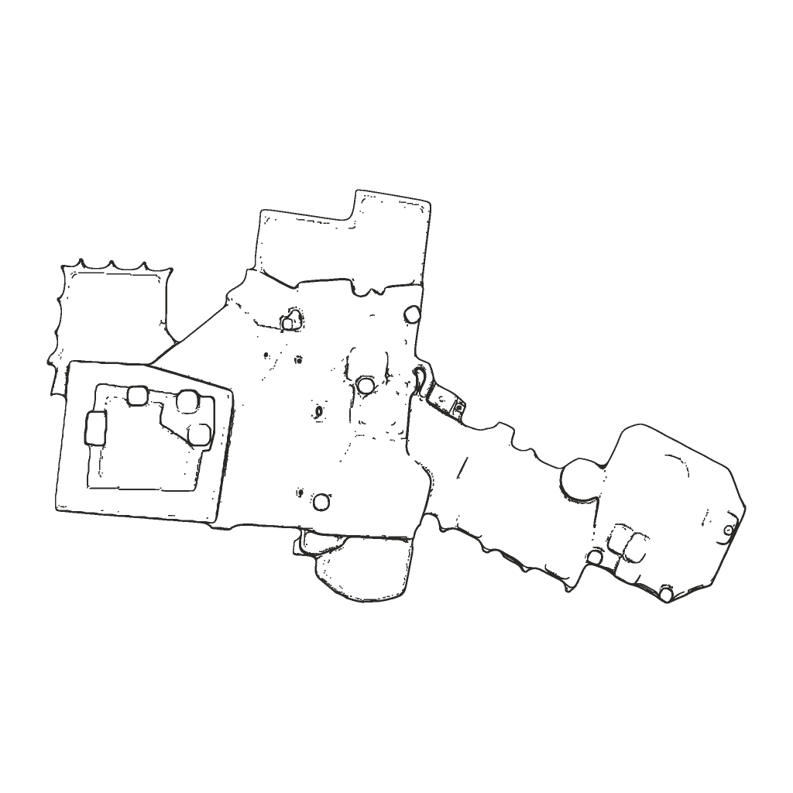
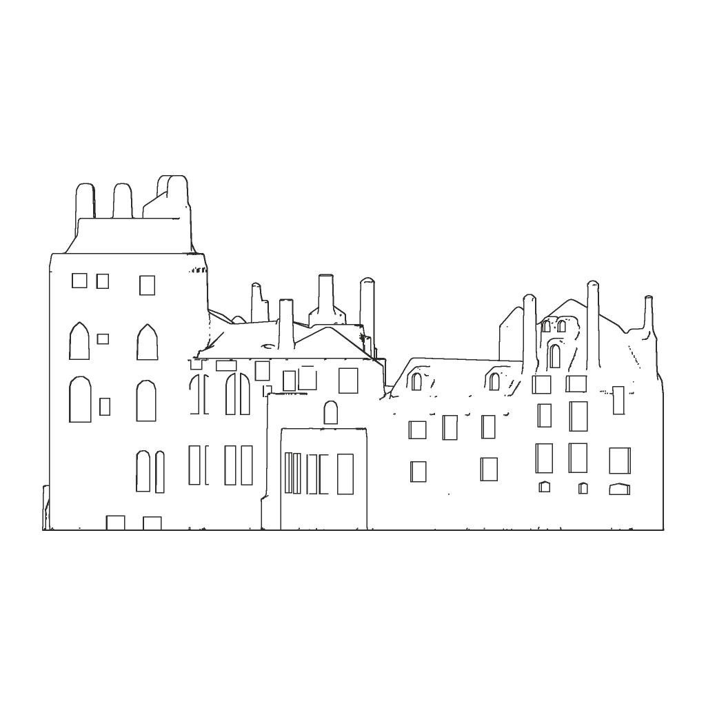
The architectural study is adapted for printing. Small features, undercuts and roof forms are reviewed against what can survive at miniature scale.
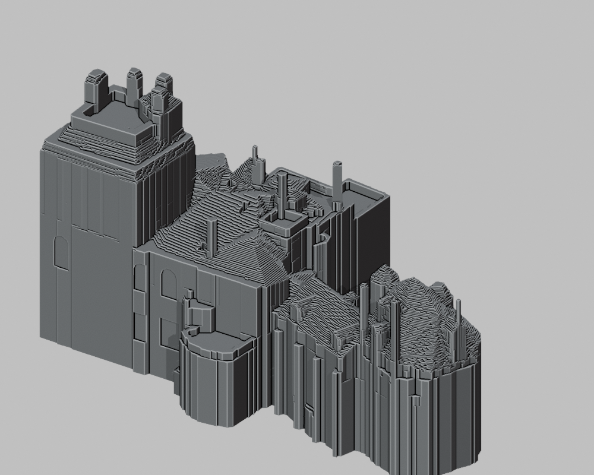
The same masses, read three ways, printed and compared at arm’s length.
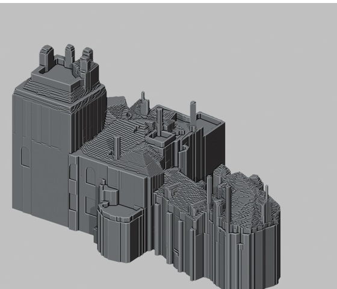
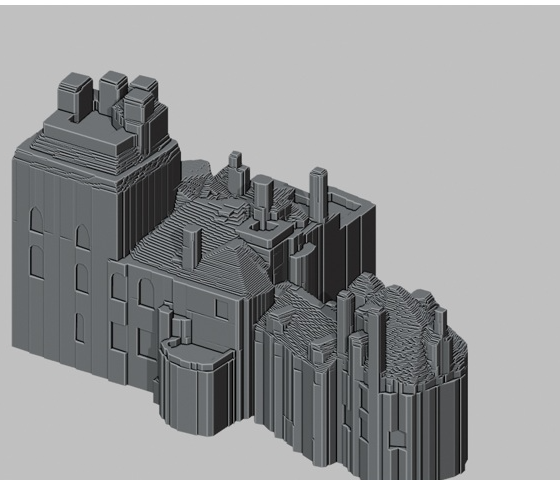
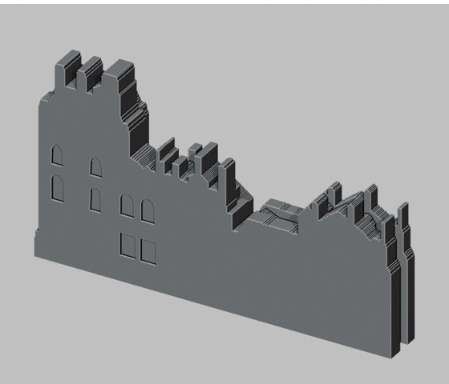
Windows, roof edges and narrow details are tested at the size of the object. A feature that works on screen may need to be strengthened, simplified or left out in plastic.
Slicing turns the model into paths for the printer. Layer height, walls and infill are chosen for each version, then the preview is checked before printing.
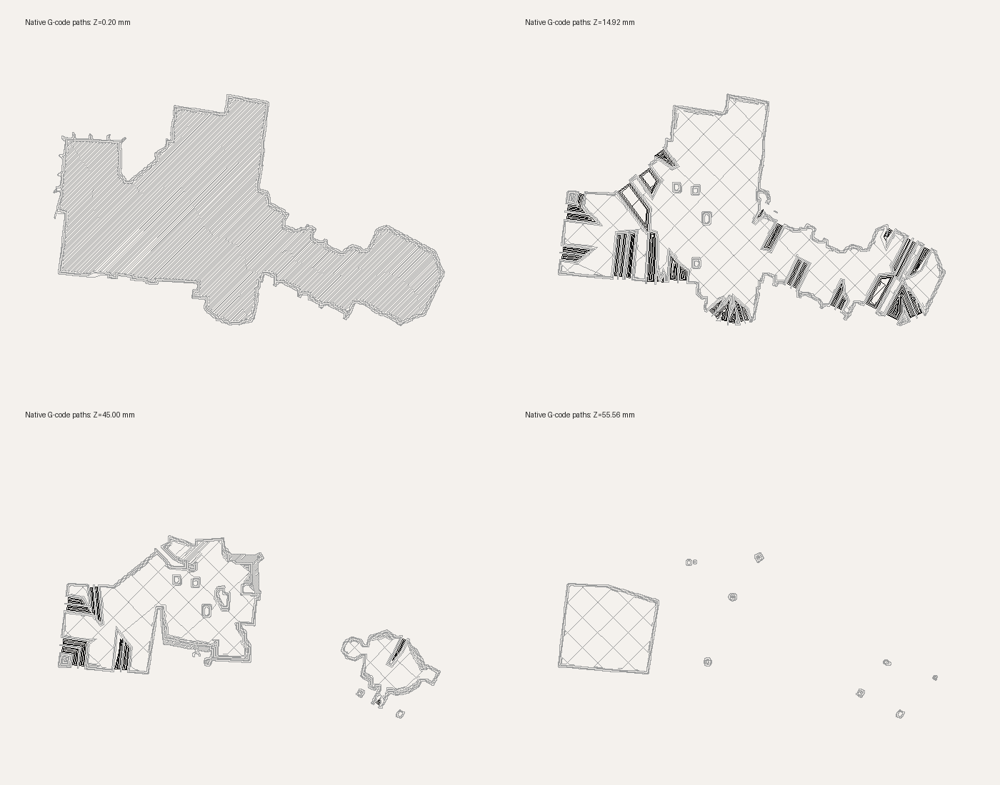
Printed in PLA on a Bambu Lab A1. Test pieces help refine the finish, strength and fit. The Deluxe preview pairs its detailed production castle with a separate landscape base.
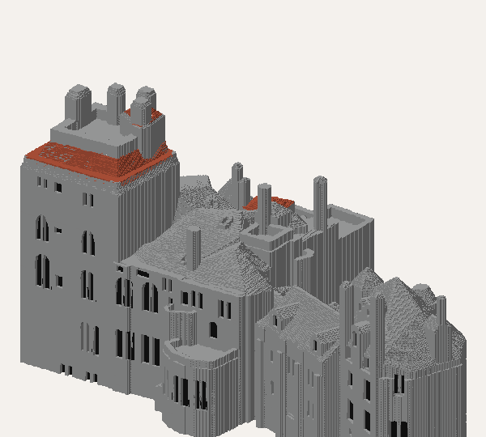
| Fonthill | The sculpture | |
|---|---|---|
| Model | Clay blocks, then plaster of Paris | Digital mesh |
| Material | Hand-mixed concrete | Matte PLA |
| Forms | Unplaned boards | None; built up in layers |
| Lifting | Lucy, at the hoist | The printer’s Z axis |
| Time | 1908–1912 | Varies by size and finish |
This sculpture is a contemporary interpretation of Fonthill, not a reproduction of Mercer’s model. No institutional endorsement is implied.